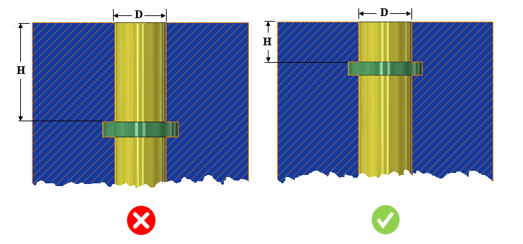

溝距離と直径の比率は、ユーザーが指定した値以下である必要があります。
溝を加工するためには、適切な工具長さが必要です。溝距離が大きくなると、長い工具長さが必要となり、加工中に工具の振動が発生する原因となります。
一般的なガイドラインとして、溝距離と直径の比率は 3.0 以下であることが推奨されます。
ルールUIでは、材料マップから材料の一覧が読み込まれ、ユーザーは材料およびその値を設定できます。
材料とその値を設定した後、ユーザーは Ctrl+M コマンドを使用して、ルールUI上で材料グループおよびグレード別に設定された材料の一覧をフィルタして表示できます。同じキー（Ctrl+M）を使用してフィルタを解除することもできます。

ここで、
H = 溝距離
D = 穴径